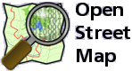

Activities
KaLUG 社群技術分享工作坊- Mapping Party
- When:
- 2011.01.02 09:30 - 16:30
- Where:
- [高雄] 蓮潭國際會館
- Category:
- Community
- Contact:
- 彭冠雯 ossfworkshop@openfoundry.org
- Tel:
- (02)2788-3799#1469
OpenStreetMap 致力於台灣各地區線上地圖的編輯，提供更完整的地圖照片以及更精確的所在位置，該社群目前由自由軟體鑄造場提供硬碟空間及頻寬支持，且由自由軟體鑄造場協助場地租借及其費用，若有興趣請參考自由軟體鑄造場之應用典範。
議程簡介
介紹台灣 OpenStreeMap (OSM) 現況，了解全球 OSM 社群的動態和成果，及其背後所應用的相關技術。會中將會藉由實際上的操作，教導大家如何在 OpenStreetMap 上標註 POI (Place of Interesting)上傳地圖資訊，以及如何繪製屬於自已的地圖。
詳細的內容時間描述與報名資訊如下：
- 對象：任何對地圖，Open Data 圖資，及自由軟體有興趣者。
- 人數：約 40 人。
- 費用：全程免費。
- 平台：Linux, windows，現埸有無線網路及幾段實作課程，請自行攜帶 NB 參加
| 時間 | 內容 |
|---|---|
| 09:30-10:00 | 開場（介紹台灣 OpenStreeMap(OSM) 現況） |
| 10:00-10:30 | 全球 OSM 社群的動態和成果(Interesting projects in the OSM community) |
| 10:30-11:00 | OSM Technical 技術部份 |
| 11:00-11:30 | POI + Make your own map |
| 11:30-12:00 | 行前準備 |
| 12:00-13:00 | 午餐時間(Lunch) |
| 13:00-15:00 | 實際畫地圖(Mapping) |
| 15:00-16:00 | 地圖資料上傳 - Upload + Make your own map |
| 16:00-16:30 | 摘要 - Wrap-up |
講者簡介
Enrico Zini
Enrico Zini 畢業於世界上最古老的義大利波隆尼亞大學的資訊科技所，長期參與自由軟體的開發，是 Debian 資深的軟體開發者，也是義大利波隆尼亞市多個學校及地方政府單位的資訊科技顧問，關心數位落差的議題，並且在 2003 年到突尼西亞幫助地方政府設立 Linux 電腦教室及培訓 Linux 種子師資，同年，也應荷蘭「策略科技」(TacticalTech.org) 一組織之邀，擔任「夏季源碼營」 (Summer Source Camp) 一活動的「輔導員」(facilitator)。Enrico 長期致力於傳道，演講經驗豐富，除了推動自由軟體在校園及非營利組織的應用之外，也研究人機介面 (HCI)、使用者介面 (UI)、和以使用者為中心的設計 (User-Centred Design)。Enrico Zini 成立自已的工作室開發自由軟體，主要客戶包括義大利學校和地方政府機關還有商業客戶，和義大利佛羅倫斯的一家自由軟體公司 Truelite 有密切合作關係。
- 主要專長：自由軟體開發，Debian 開發者。
- 聯絡方式：enrico AT enricozini.org。
- 個人網頁：https://enricozini.org/。
林鈺維（Yuwei Lin）
林鈺維（Yuwei Lin），科技社會學家出身,目前任職英國 Salford 大學的媒體音樂與表演學院。任教的項目包括動畫和電腦遊戲的設計與專案規劃，social media，future media。2000 年在英國約克大學做博士的時候開始關心以及參與自由軟體運動。博士論文從科技社會學的角度探討不同社群和個人對駭客文化不同的認知，詮釋與行動。翻譯多份重要的 GNU 文件。
- 主要專長：Science, Technology, and Society。
- 聯絡方式：yuwei AT ylin.org。
- 個人網頁：https://www.ylin.org/。
劉俊宏
劉俊宏，現在的職務是軟體程式設計師，主要工作領域在嵌入式 Linux 系統開發。同時也是自由軟體的愛好者，並且將自由軟體應用在日常生活中，並活躍於大高雄 Linux 使用者協會。是個鐵道迷，熱愛蒸氣火車和柴油曾經在彰化縣政府舉辦的 "SL 半線號" 中擔任解說員。 從2001年起，利用舊地圖尋找已拆除或停駛的鐵路遺跡，特別是原屬於月眉糖廠及高雄糖廠的糖廠鐵路路線遺址。
- 主要專長：地圖，鐵道，軟體開發。
- 聯絡方式：louisliu AT locomotion.tw。
- 個人網頁：https://blog.locomotion.tw/。
Note 注意事項
- 報名時請務必填寫 正確 可以聯絡到您的 E-Mail 以利候補作業或課程變動等通知。
- 本次課程由於座位有限，若您報名後因故不克前來參加，請您務必於開課前三天 到此取消報名！
- 您的報名資料將只用於本次及未來的工作坊活動宣傳及問卷，不會傳遞給任何第三者。
- 主辦單位保留更改活動內容及相關事項之權利。